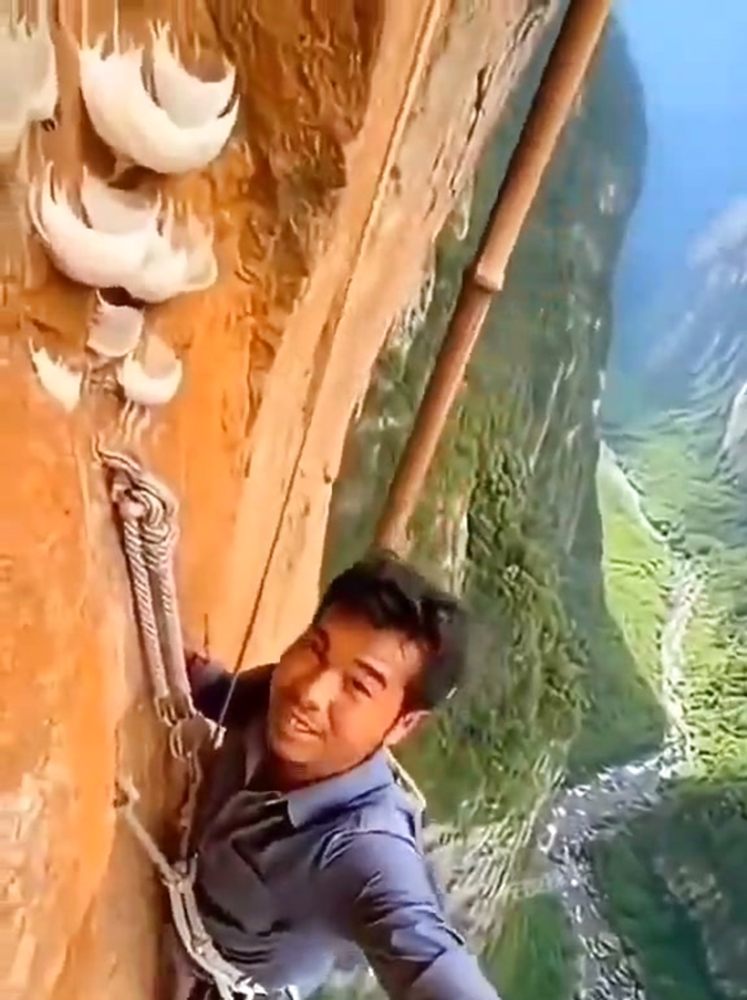
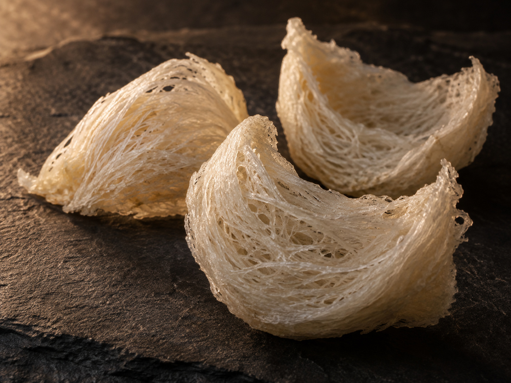
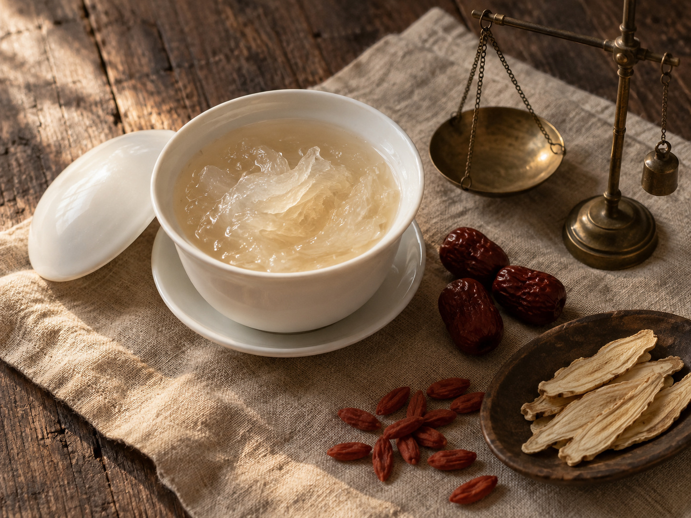
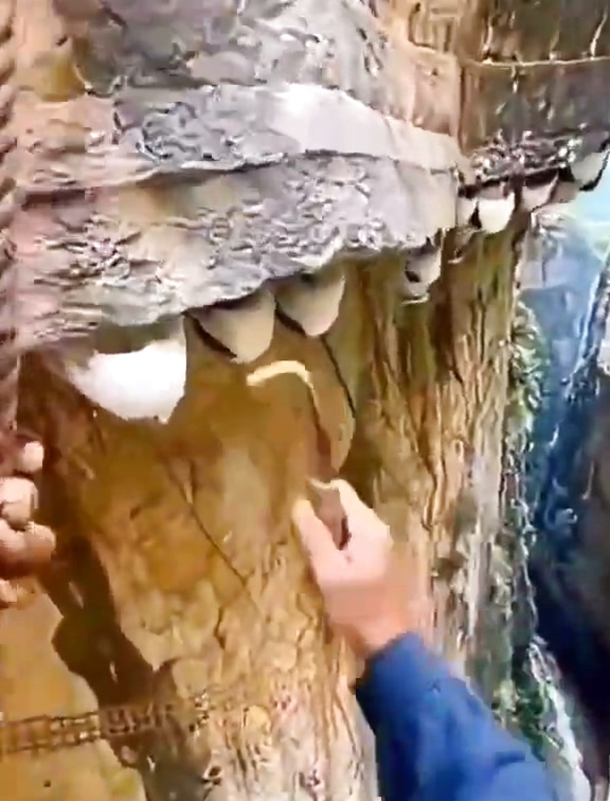
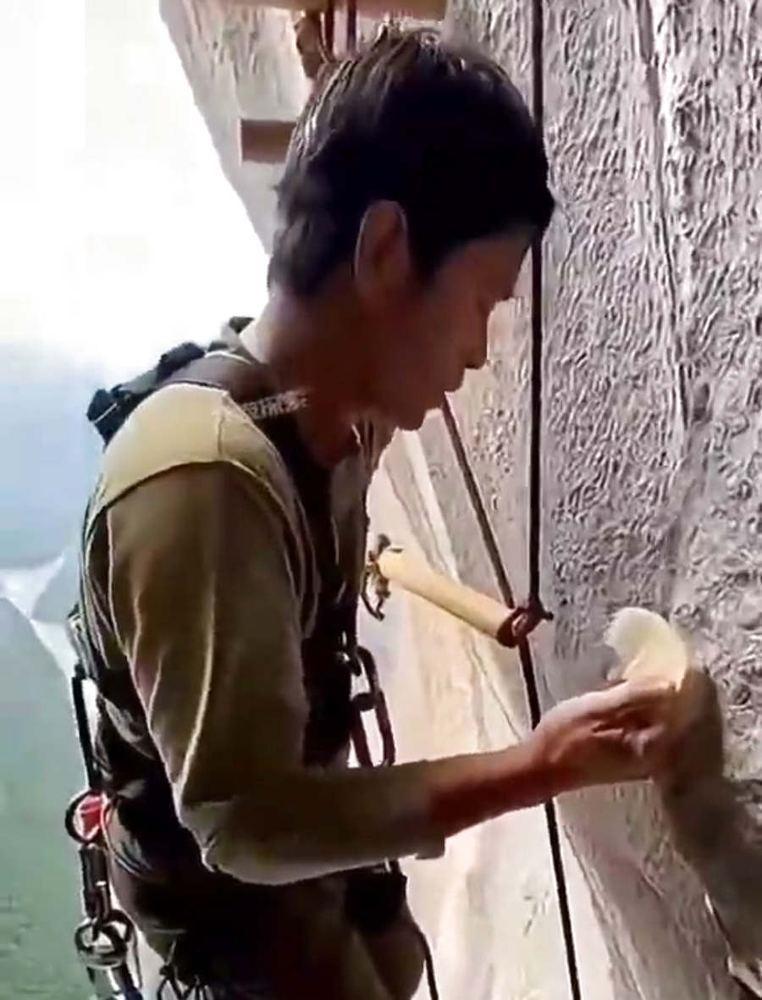
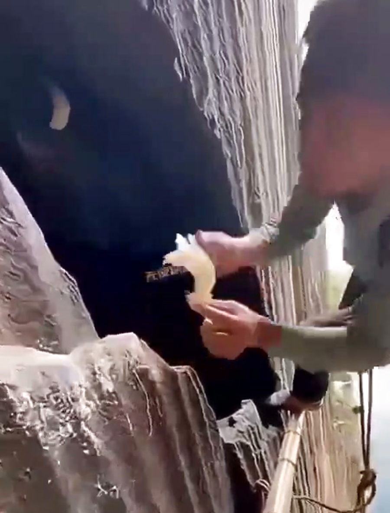
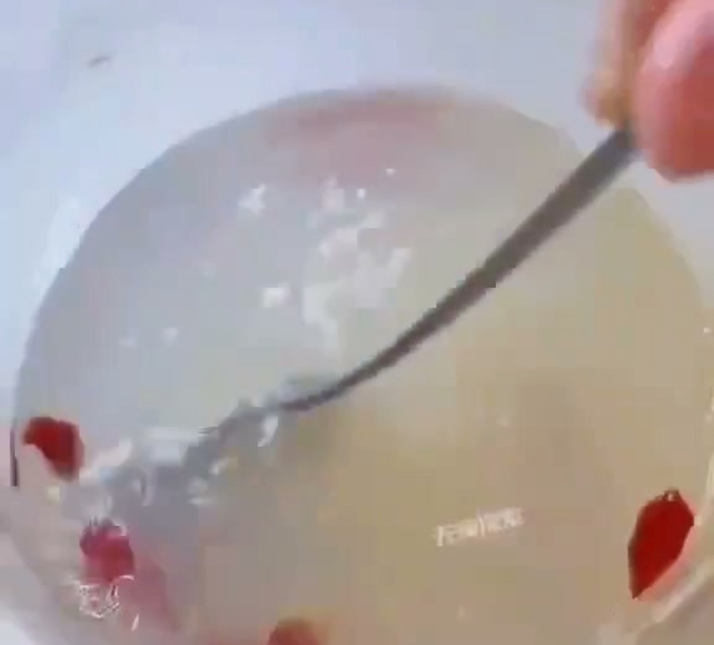

其一
築巢的其實是「金絲燕」
燕窩的來源是雨燕目的金絲燕屬（Aerodramus），與我們熟悉的家燕分屬不同科別。採收量最大的兩種，是白巢金絲燕（A. fuciphagus）與黑巢金絲燕（A. maximus）。牠們的巢是一只淺杯，牢牢黏在洞壁上，由交織的唾液凝結而成——一隻雄鳥要花上大約 35 天，才能築完一巢。

先說一件多數人都弄錯的事：燕窩不是燕子的窩。築出這只巢的，是雨燕目的金絲燕；牠們不銜泥、不叼草，而是用唾液，一絲一絲把巢拉在岩壁上。

燕窩的來源是雨燕目的金絲燕屬（Aerodramus），與我們熟悉的家燕分屬不同科別。採收量最大的兩種，是白巢金絲燕（A. fuciphagus）與黑巢金絲燕（A. maximus）。牠們的巢是一只淺杯，牢牢黏在洞壁上，由交織的唾液凝結而成——一隻雄鳥要花上大約 35 天，才能築完一巢。
燕窩作為食材出現在華人飲食中，已有四百年以上的歷史。最廣為流傳的說法，是明代船隊下西洋途中在南洋遇風受困，隨行者攀岩取下岩壁上的白色鳥巢充飢，返航後帶回中土——傳說難以考證，但南洋與華人餐桌之間的這條路，確實自那個時代開始被走出來。
一個少有人提起的細節：李時珍的《本草綱目》並未收錄燕窩。直到清代趙學敏寫《本草綱目拾遺》時，燕窩才被正式補進本草體系。也就是說，燕窩是先紅遍餐桌，才被寫進藥典的——它的地位不是醫家給的，是幾代人吃出來的。
清代的宮廷膳單裡，冰糖燕窩是常見的一味；而在民間，它長期是聘禮、彌月、產後與探病時才捨得動用的禮數。時至今日，燕窩早已走進日常，但那份「拿出來就是心意」的分量，一直留著。
燕窩大養肺陰，化痰止嗽，補而能清，為調理虛損癆瘵之聖藥。
中醫看燕窩，看的不是「補」，而是「潤」。它性平、味甘，走肺、胃、腎三經；歷代醫家看重的，是它補得住卻不上火——在傳統食療的框架裡，這種「補而能清」的性格相當少見。
— 清‧吳儀洛《本草從新》
秋冬乾燥、久咳無痰、喉間乾癢時，古籍中最常被提到的用法。傳統上以冰糖燉盅、少量長期服用為主，講究的是「細水長流」而非一次大補。
病後、術後、產後的調養期，體虛卻又受不住溫燥藥材的人，傳統上會選擇燕窩。它的角色比較接近「墊底」——把胃口和元氣先扶起來。
燕窩被視為女性滋養之選，時間比任何一份成分表都久。現代研究指出，燕窩主要成分為唾液酸化的黏蛋白醣蛋白，乾重約含 60–65% 蛋白質、30–35% 醣類與約 1% 脂肪。

燕窩的產區幾乎全數集中在東南亞。同樣是燕窩，採法卻天差地遠——有人吊在懸崖上取，有人在城鎮邊蓋一整棟房子等燕子自己來住。
年產量為東南亞主要產國之出口概數，另有越南、柬埔寨等產區未計入。香港長期扮演全球燕窩貿易的集散地。
全球產量最大的國家，供應以「屋燕」為主。蘇門答臘北部一帶最為密集——沿海城鎮蓋起一棟棟無窗的水泥高樓，屋內模擬洞穴的溫濕度與回音，讓金絲燕自行入住築巢。
洞燕真正的起點。婆羅洲的 Gomantong 與 Niah 巨型石灰岩洞，是歷史上最重要的燕窩產地——採燕人以竹製長梯與藤索攀上數十公尺高的洞頂，這門手藝在當地已經傳了好幾代。
南部安達曼海的島礁是傳統洞燕產地，「燕窩島」（Ko Rangnok）之名即由此而來，島上採收長年由特許家族承包並派人看守；本土另有 Pak Phanang 一帶成規模的燕屋聚落。
會安外海的 Cù Lao Chàm 島群，是越南最負盛名的洞燕產區，採收與看守的制度延續數百年。當地人以竹架搭進海蝕洞內，貼著潮聲作業。
產量最小的產國，主要分布在巴拉望一帶的海崖洞穴。當地採燕人有自己的稱呼——busyadors；這一行的人數與收成，近年都在明顯下滑。
內陸石灰岩絕壁上的野生洞燕，產量極少、幾乎不進入大宗貿易。本站影片即拍攝於此——竹竿插進岩壁當作棧道，一條主繩，一把彎刀，全靠人力。
這段影片沒有配樂，也沒有加工。柬埔寨的採燕人帶著一條繩、一副竹架，爬上數十公尺高的石灰岩絕壁——沒有安全網，沒有機器，只有一把彎刀和一雙手。

金絲燕只在人跡罕至的洞壁與絕壁凹處築巢。要找到一片可採的岩面，往往得先走上大半天的山路。

以竹竿與藤繩，在垂直岩壁上一根一根搭出臨時棧道。腳下是深谷，全程沒有第二道防護。

用彎刀貼壁、順著巢緣完整割下整片燕盞。力道稍偏就碎成屑，一整趟下來也不過採得數十盞。

浸潤、細挑羽絨、文火慢燉。野生洞燕燉開後條絲分明、透亮帶彈，入口是山岩養出的清潤。
燕窩這個行業，資訊落差太大，客人幾乎無從判斷。所以我們把標準寫在最前面——不是為了好聽，是為了讓你有東西可以拿來比對。
血燕的紅色與血無關。研究指出，那是燕屋或洞穴環境中的活性氮化合物與燕窩黏蛋白反應所致，並常伴隨較高的亞硝酸鹽含量。基於這一點，我們選擇不碰。
不使用漂白劑修飾色澤，不刷膠補盞型，也不做任何增加重量的處理。羽絨一根一根用鑷子挑，慢，但乾淨。
每一批貨都留下產地、採收期與加工紀錄。你問得出來的，我們就答得出來——這是這一行最基本、卻最常被省略的事。
燕窩含水量差一點，重量就差很多。我們以充分乾燥的狀態出貨，秤的是燕窩，不是水。
洞燕與屋燕該選哪一種、一週吃幾次、燉多久，這些問題沒有標準答案，得看人。歡迎帶著你的狀況來問。